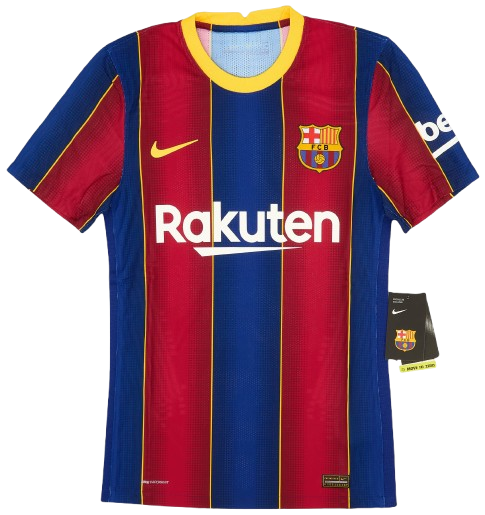
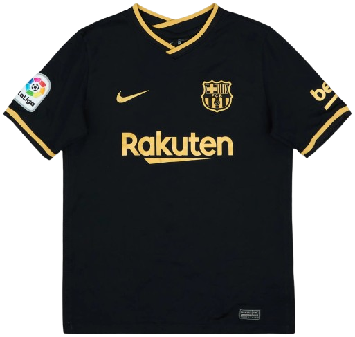
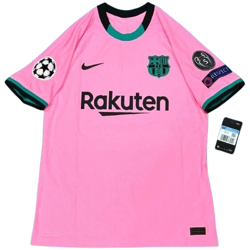
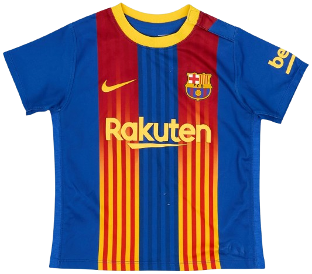

Home Kit

A modern home kit blending classic blaugrana stripes with yellow accents, marking the start of a new era.
The 2020/21 season marked the beginning of a major transition for FC Barcelona. After the humiliating 8–2 defeat to FC Bayern Munich in the previous season’s Champions League, the club appointed Dutch legend Ronald Koeman as head coach to rebuild the squad. The season was filled with turmoil both on and off the pitch, highlighted by Lionel Messi publicly requesting to leave the club in the summer before ultimately staying for the final year of his contract. Barcelona struggled early in La Liga but gradually improved during the second half of the season as young players like Pedri and Ronald Araújo emerged as key contributors. The team finished third in La Liga, behind Atlético Madrid and Real Madrid, and were eliminated in the Round of 16 of the UEFA Champions League by Paris Saint-Germain after a heavy first-leg defeat. Despite the inconsistency, Barcelona ended the campaign on a positive note by winning the Copa del Rey, defeating Athletic Bilbao 4–0 in the final, with Messi scoring twice in what would become his last trophy with Barcelona before leaving the club later that year.

A modern home kit blending classic blaugrana stripes with yellow accents, marking the start of a new era.

A sleek black away kit with gold detailing, giving the team a sharp and premium alternative look.

A vibrant pink third kit with contrasting trim, bold and unforgettable in one of Messi’s final seasons.

A special turquoise fourth kit with a retro Nike logo, celebrating nostalgia while standing out visually.